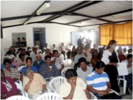
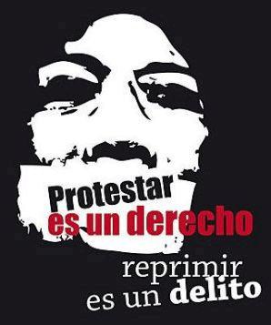

UNA SOLA PROPUESTA PARA HABLAR EN EL MISMO LENGUAJE
DIRIGENTES DE COSTA, SIERRA
Y ORIENTE SE REUNIERON EN NANGULVÍ.
Dirigentes de organizaciones, comunidades, gobiernos locales de Íntag, representantes de la Federación Indígena Campesina de Imbabura (FICI), de la Confederación de Nacionalidades Indígenas de la Costa (CONAICE), y de los pueblos Kichwa Sarayacu, Saraguro, Chibuleo y Puruha, se reunieron en el Complejo Eco Turístico Nangulví, los días 16 y 17 de junio. Polibio Pérez, en representación de la Coordinadora Zonal de Íntag, organizó el evento con el fin de unir las luchas en contra de la minería y a favor del agua. La finalidad del evento también era para conocer de cerca la resistencia a la minería durante 15 años en la Zona y las alternativas productivas para parar la arremetida de empresas mineras.
Los pobres dan de comer al país
Representantes de las organizaciones mencionadas transmitieron sus experiencias. Una de las mejor conocidas y más largas es la del pueblo Sarayacu, en la provincia de Pastaza, en defensa de su territorio contra la explotación petrolera cuyo dirigente habló del desarrollo de un modelo de gestión territorial propio. La experiencia de la Federación del Pueblo Awa es alrededor de la construcción de su plan de vida. Y la experiencia del Pueblo Otavalo se trata de la distribución del agua de riego.
El evento fue una oportunidad para que los dirigentes buscaran más alternativas y propuestas que tengan fuerza a nivel nacional e internacional porque el problema minero está en todas partes. Los dirigentes concluyeron que la unidad de los pueblos es la única fuerza para luchar contra el modelo extractivo impulsado por las transnacionales. También acordaron trabajar a nivel regional y nacional para concientizar a la población sobre la minería y el problema del agua. Con nuevas alternativas se quiere lograr el buen vivir del que todo el mundo habla.
In su intervención, Marco Guatemal, presidente de la FICE, felicitó la amplia participación de la gente. Promovió un esfuerzo para tener incidencia a nivel local, regional, nacional e internacional. Explicó el deseo de su organización de formar un gobierno autónomo para las 200 comunidades que representan a mil familias. También criticó las leyes impuestas desde arriba, como la Ley del Agua. ¿Quienes cuidan el agua?, preguntó a su audiencia. Es el campesino que vive en los páramos. Por eso, recalcó que es importante la organización de todos los pueblos. En la actualidad dijo que están más de dos mil familias sin agua, apenas cada 15 días tiene agua para riego. En cambio, elogió la riqueza hídrica de Íntag y dijo que no se puede permitir que esté en manos de las empresas mineras. También fue crítico de la gran cantidad de tierras que están en manos de los hacendados. Para los pobres o los runas, dijo, están las laderas o lo que no sirve. ¿Quiénes son los que mantienen al país? Son los pobres con sus pequeñas parcelas, afirmó el señor Guatemal.
Patricia Vinueza, vicepresidenta del Pueblo Kichwa de Otavalo, en su intervención dijo que relacionar actividades es importante porque cada comunidad por su lado no puede llegar a las metas que todos comparten. También aseguró que en su pueblo no tiene mimería, pero están afectados por las canteras. Si se da la minería en Íntag, todos seremos afectados de una u otra forma, dijo. También recordó que el prefecto de Zamora Chinchipe, Salvador Quispe, está preparando una consulta para decidir el tema minero. Asimismo, dijo que el problema de Íntag ya no es zonal, tiene que convertirse en un problema provincial. A la vez, es importante buscar alternativas como la consulta que promueve el prefecto Quispe para decidir el tema minero, enfatizó.
En cambio, para Agustín Punina, ex dirigente de la CONAIE, es necesario por lo menos tener el cincuenta por ciento del poder político en las juntas parroquiales, los municipios, los gobiernos provinciales y el mismo Gobierno, para que las estrategias y planes se cumplan. Fortalecer los gobiernos comunitarios con el objetivo de servir a sus comunidades mas no servir a los patrones. Puso como ejemplos las empresas mineras y el mismo Gobierno. En el poder político han estado dirigentes indígenas pero muchos han personalizado sin pensar servir a los demás. “Han sido obedientes a los que están arriba, para nosotros eso ha sido una debilidad en lo político”. También dijo que es importante formar a líderes desde las bases. Hay que planificar a corto y mediano plazo, concluyó.
Orlindo Nastacuaz, afirmó que se puede consolidar una propuesta mancomunada desde las bases. En ella es importante que vayan los cuatro principios: la unidad, la autonomía, la identidad y el territorio. También dijo que su presencia en el foro es para hacer conocer a su organización que ha sido invisibilisada y para aportar con sus conocimientos en busca de soluciones. En la Amazonía, “no tenemos problemas mineros, pero tenemos los madereros y traficantes de tierras”.
Una idea es construir el plan de vida, el ordenamiento territorial y los CTIS, que ss refiere a las circunscripciones territoriales indígenas, o sea, un gobierno propio de acuerdo a las leyes de COTAD que cada uno puede elaborar propuestas de desarrollo. Asimismo, dijo que en su territorio cada vez está disminuyendo los bosques primarios, la casería y el agua. También manifestó que son perjudicados por las fumigaciones del Plan Colombia y las palmicultoras. ¿Cuáles son los causantes de este problema?, preguntó, y ofreció una respuesta: los mismos de siempre que están en todas partes. También dijo que como CONAICE lo que buscan es su propio sistema de vida o plan de vida. Para lograr el objetivo, dijo que es necesario capacitar a la gente y preparar nuevos líderes para que tengan mejores propuestas de plan de vida.
El representante del pueblo Sarayacu, Daniel Santi, manifestó que los procesos de lucha son importantes y que el encuentro es para enriquecerse de otras experiencias. El problema minero y el petrolero son los mismos. “Por eso, tenemos que trabajar en propuestas que se encaminen a un modelo de desarrollo diferente a la explotación que propone el Gobierno”. Todos tenemos un objetivo común, salir adelante, indicó.
Norma Mayu, líder de la Organización del Pueblo Indígena de Jatun Juigua, Cotopaxi, aseguró que es necesaria que las estrategias y propuestas sean una sola para todas las organizaciones que luchen por defender la naturaleza. Es importante que el Gobierno sienta que no sólo Íntag está en contra de la minería. Que sienta que todos estamos involucradas. Asimismo, dijo que las propuestas sean entendidas por todos y todas.
Finalmente, los y las asistentes firmaron una declaración en la cual exigen a la empresa que la minera estatal chilena CODELCO salga inmediatamente de la zona de Íntag, y al Gobierno ecuatoriano que desista del plan de retomar la actividad minera en una zona de tan alta importancia ambiental y con un proceso social de resistencia y desarrollo alternativo ejemplar.